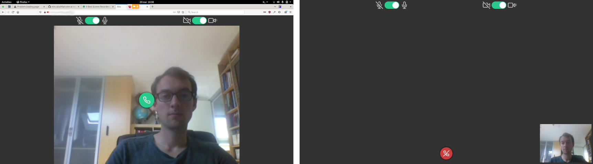
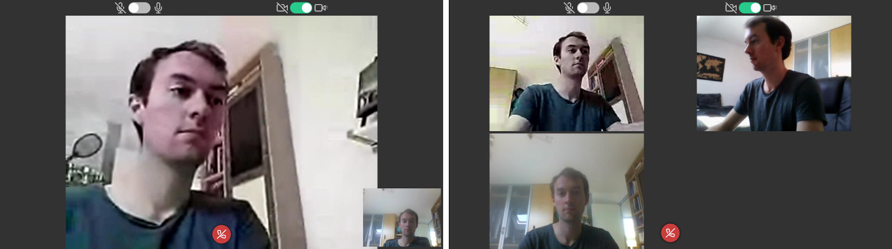

I’ve recently explored WebRTC, as a mean to making minigames with visual chat, like a Boggle for example. This would be ideal to connect more often with my grand parents in a playful and simple way (just send a link). It turns out WebRTC is not an easy beast to tame! And I’m far from having something truly robust but I believe that experience might benefit others so here it is.
Let's start with some screenshots ;)


Brief overview of WebRTC
WebRTC is a vast set of standards, tools and protocols aiming at making peer-to-peer real-time direct communications in the browser. This includes audio, video and data. There are two steps in order to setup a WebRTC communication between peers.
- Exchange public communication addresses
- Agree on the format of the data to be exchanged
All of this setup is called “signaling” and is rather independent from the WebRTC standard itself. You could do the signaling with sms, xmpp or carrier pigeon. But usually, signaling is done by the same server that serves the WebRTC-enabled application. In my case, the server is minimalist Node Express app, and the signaling is handled with Web sockets.
A connection between two peers is pragmatically called RTCPeerConnection. And once it is correctly established, our job is basically done!
Signaling with ICE
Each end of a peer connection holds a system called ICE for Interactive Connectivity Establishment, whose job is to find the most efficient route between eachother. And for this, the ICE system of the browser communicates with us through events on the peer connection object. Our job, is to label that data as “ICE candidate”, and tunnel it through our signaling server all the way to the other peer.
Relaying the config with SDP
The second type of data relayed by our signaling server is called SDP (Session Description Protocol). But again, just as with ICE, our job is only to label and transport the merchandise, no question asked.
Where is the difficulty then?
Well it’s not because we only transmit messages that both ends are gonna be happy about it. This is a highly stateful and concurrent process! And that always means bad things are gonna happen. All the “local”, “remote”, “state”, “gathering”, “pending”, “changes”, “statechange”, “disconnected”, “failed”, “error” and others are premises for trouble. In an ideal setting we only have to call setLocalDescription and setRemoteDescriptions for SDP transmitted. In practice there is a need to handle conflicting states and offers. Recently, a pattern has emerged called “Perfect Negotiation” to help handle this correctly. I’ve added a small paragraph in the readme with links to resources.
This is the pattern implemented in the JS part of elm-allo. I’ve tried to extract a high level API in the case of signaling with Web sockets. It exposes to objects, SignalingSocket and PeerConnection, with very few cornerstone exposed methods. With this setup, the actual client.js code is quite straightforward.
I should note that I may have introduce some issues, or that it is not as “perfect” as it claims since I’m still having some negociation issues.
Onto the UI part!
That’s where I thought all the Elm fun would be ^^. Regarding data, this is a very simple application. No routing, flat model only holding the ids of the connected peers in a Set, plus some controls for the microphone and camera.
The handling of the view however is a bit more complex. As you can see in the screen shots below, the layout evolves in 4 steps. First only my camera is displayed, maximized on the screen. When I’m joining the call (green call icon) and waiting for others (or myself ^^) my local view is pushed on the bottom right corner. It is in front of the first remote peer view, as visible in the 3rd step. Finally, if there are more than 3 peers in the room, including me, the layout switches to a grid view, where we are placed last.
Those layout changes introduce variations in the DOM hierarchy and that can be quite deadly to the peers streams, attached to the video DOM objects of their associated video. Finding a DOM hierarchy that is friendly with Html.Keyed or its elm-ui version is quite constraining. In particular, the inFront and behindContent elements of elm-ui are not “keyed-friendly” since they introduce an intermediate div element that we have no control of. That is the reason why I ended up rewriting all the central area (the video stream) directly with Html, flexboxes and grids.
I’ve had very useful help from @dmy for some responsiveness issues so thanks for that! Much thanks also to the author of elm-feather and of that toggle switch.
The ports story
Not much to say except that I’ve just added them on the go. Most buttons trigger some ports and possibly fallible JS code. I’m not checking that they finish correctly, just assuming they would.
Caveats on testing limitations
I haven’t touched on this yet, but you should know that testing WebRTC is hard, and so I mostly did not create a test suite. First you need SSL to grab the camera and audio. That’s ok for with self-signed certificates. Unfortunately however, apple devices do not seem to agree with this for secure websockets. They need to communicate with actual correct certificates.
For the most part, recent chromium and firefox are compatible with all the specs. I realized however that event though iOS >= 11 supports WebRTC 1.0, it does not support the updated 1.0 (?) spec that introduced few modifications to improve “perfect negociation”. Such as corner cases of setLocalDescription, setRemoteDescription and restartIce.
Demo time!?
Well… I must thank you for having read until here, but that implementation connects everyone who reach the page. So it would not be practical and you might see things that can’t be unseen. So instead I’ve added my very simple Nginx reverse proxy config if you want to set it up on your server and try it! It also seems to work directly on Heroku. So if you want to try it, it is as easy as:
git clone https://github.com/mpizenberg/elm-allo.git
cd elm-allo
heroku login
heroku create
git push heroku master
Implementation of rooms with random addresses is left as an exercise for the reader ;)
PS: if you happen to know how to fix that bug, PRs are very welcome. As of this afternoon, I did a test calling my grandparent iPad and it failed miserably, I could see his stream but not he mine...